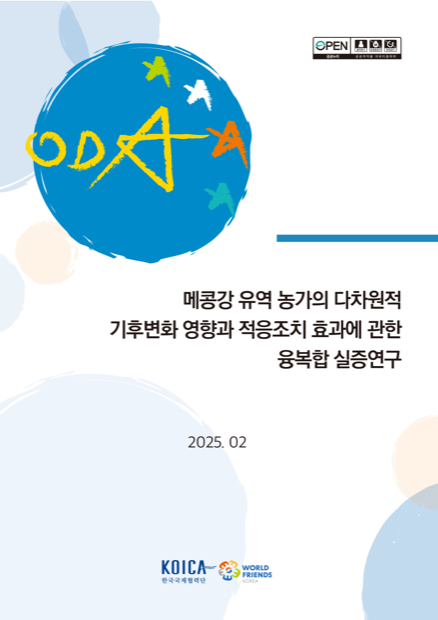

42 / 43
어려워 보여도 — 이 보고서에 쓰인 방법은 전부 오늘 배운 것이다.

KOICA 메콩강 농가 기후변화
영향평가 (2025, 서울대)
| 보고서가 쓴 방법 | = 오늘 배운 것 |
|---|---|
| 다중회귀분석 (OLS) | 계수·R²로 읽은 회귀 |
| 패널 고정효과 (Panel FE) | 4.59 → 3.54 → 1.26 계수 사다리 |
| 주성분분석 (PCA) | 여러 지표를 한 '지수'로 |
| 내생성 통제 (ESR) | '상관 ≠ 인과' · 편향 잡기 |
| 패널 자료 · 집단 비교 | 패널 데이터 · t검정/ANOVA |
용어만 길지, 전부 아는 개념이다. 이제 실제 표를 읽어보자. →